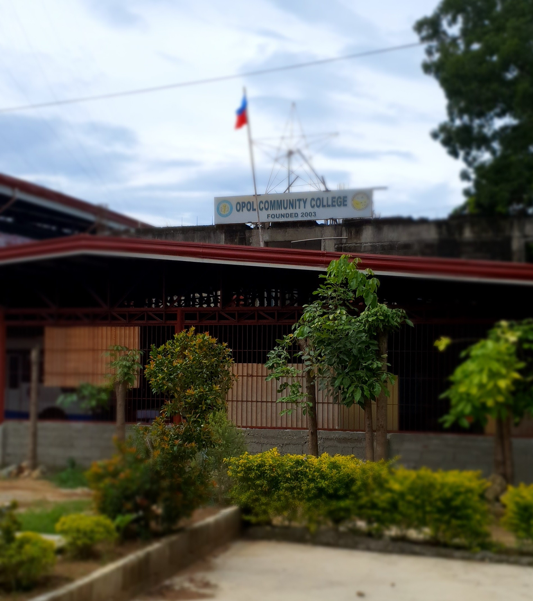

A Community College in the Municipality of Opol
The Opolanons envisioned a learning institution within the community that will provide not just accessibility and cost-efficiency but also a good quality education.
This vision was realized by virtue of Sangguniang Bayan Resolution No. 2003-155, enacting Ordinance No. 2003-14, creating the Opol Community College, in accordance with
the Constitutional mandate promoting “the right of all citizens to quality education” and to “take appropriate steps to make such education accessible to all.”
In consortium with the Bukidnon State University (formerly Bukidnon State College), the ordinance was approved on August 12, 2003.

The Community College started its operation with two tertiary courses leading to degree programs in Bachelor of Science in Elementary Education, with twenty (20) enrollees,
and Business Administration, with sixty-three enrollees. The College aimed its focus not just on academic learning but also on occupational skills, hence, the Technical-Vocational courses,
such as Food Technology, Welding, Automotive, Civil and Electrical Technology to name a few, formerly administered by the Opol National Secondary Technical School, is now under the administration
of the Opol Community College per Memorandum of Agreement between the latter and the Technical Education and Skills Development Authority (TESDA), which took effect in the School Year 2004-2005.